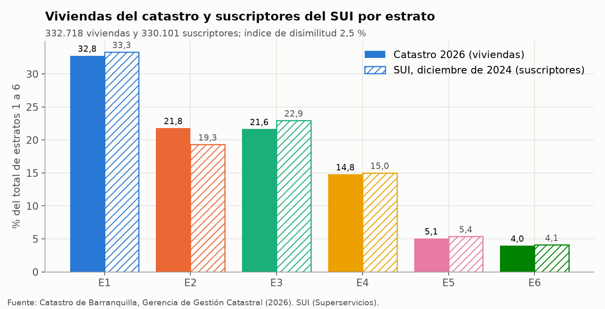
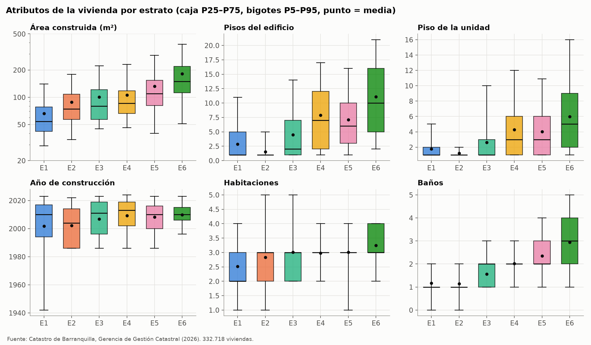
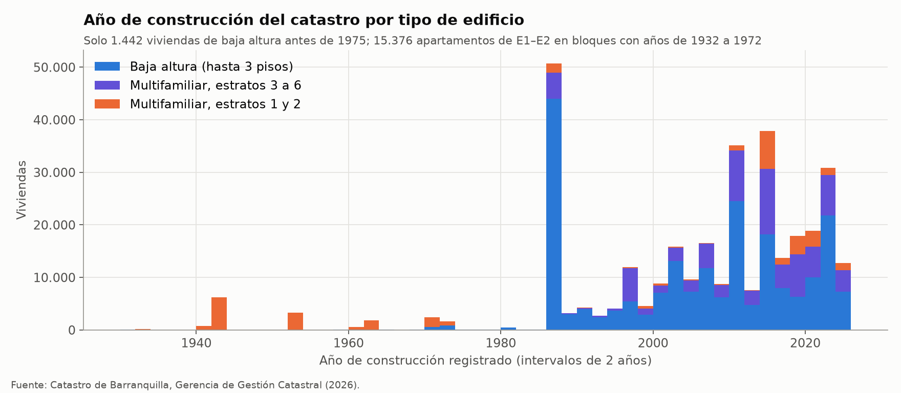
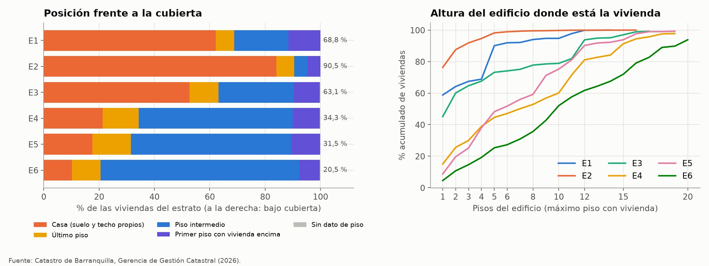
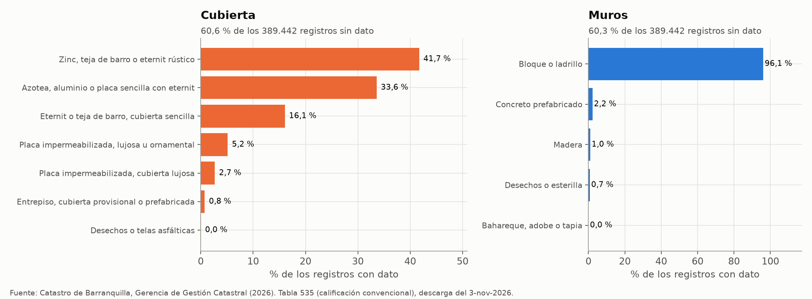
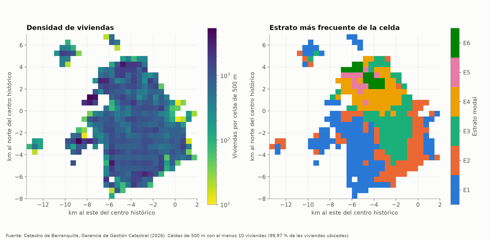

Catastro de Barranquilla#
El catastro multipropósito de Barranquilla es la base física de toda la tesis: de él salen las 332.718 viviendas
residenciales con estrato, su área, sus pisos y su posición dentro del edificio, y con ellas se construyen los
arquetipos de la Fase 1 y la composición del parque que la Fase 2 simula (Alcaldía de Barranquilla, Gerencia de Gestión Catastral, 2026). Este capítulo
describe las tablas que se descargaron, cómo se unen, qué muestran los datos por estrato, qué problemas tienen y cómo
se trataron, y documenta paso a paso el camino desde la descarga hasta la asignación de cada vivienda a un arquetipo.
Todas las cifras salen de scripts/eda/catastro.py, que solo publica agregados.
Qué es#
Es el registro predial de la ciudad que mantiene la Gerencia de Gestión Catastral de la Alcaldía de Barranquilla. Se
publica como servicio de datos abiertos en ArcGIS REST (catastro/datosabiertos/MapServer), con tablas de predios, unidades de construcción, características de las unidades, terrenos, direcciones y calificación de la
construcción. No es una encuesta: describe todos los predios formales y buena parte de los informales, con los
atributos que el catastro levanta para avaluar (área, uso, pisos, habitaciones, baños, año y materiales), pero sin
información sobre los hogares ni sobre sus equipos. El servicio no declara una licencia explícita en sus metadatos.
Se usa como información pública con fines académicos y solo se redistribuyen agregados.
Cobertura y estructura#
La unidad de análisis es la unidad residencial física, es decir, un registro de la tabla 505 de características,
que describe una casa o un apartamento. Ese registro se liga a una o varias unidades de construcción (305), cada
unidad a su predio (500) por la tabla intermedia 602, y el predio a su terreno (315, por la tabla 601) y a su
dirección (105). La calificación convencional de la construcción (535), que trae los materiales, cuelga del registro
de 505 por su globalid. La jerarquía es unidad ⊂ predio (número predial de 30 dígitos) ⊂ edificio o lote (los
primeros 22 dígitos) ⊂ manzana (los primeros 17). La Tabla 38 resume el tamaño de cada
tabla y la tasa de empalme por su llave.
Tabla |
Contenido |
Llave |
Filas |
Empalme |
|---|---|---|---|---|
505 |
Características de la unidad (solo residenciales) |
|
383.724 y 383.845 |
99,66 % tiene enlace a 305 |
505–305 |
Enlace de cada registro de 505 con sus unidades de construcción (consulta de relaciones) |
|
434.019 y 434.167 |
100 % de las unidades está en 305 |
305 |
Unidades de construcción: piso, tipo de planta y altura |
|
591.370 y 591.633 |
99,51 % de las unidades residenciales tiene predio en 602 |
602 |
Relación unidad de construcción ↔ predio |
|
584.710 y 584.924 |
100 % de los predios está en 500 |
500 |
Predios: número predial, estrato, condición, tipo de vivienda y área del terreno |
|
478.309 y 478.361 |
99,97 % de los predios con vivienda tiene dirección |
105 |
Dirección del predio |
|
496.203 |
96,40 % de los registros es la dirección principal |
315 |
Terreno (se guarda el centroide del polígono) |
|
204.095 |
99,91 % de los terrenos tiene predio en 601 |
601 |
Relación terreno ↔ predio |
|
203.922 |
34,41 % de los predios con vivienda tiene terreno propio |
535 |
Calificación convencional: armazón, muros, cubierta, fachada, pisos, conservación y puntaje |
|
389.442 |
387.450 llaves distintas; 1.988 registros sin llave |
Las llaves casi siempre empalman, pero las relaciones no son uno a uno. 44.843 registros de 505 están ligados a más de una unidad de construcción (hasta 46), 556 unidades de construcción aparecen en más de un predio, 602 trae 49 pares repetidos y 1.177 números prediales se repiten en la tabla 500. Solo un tercio de los predios con vivienda tiene terreno propio, porque los apartamentos en propiedad horizontal comparten el lote del edificio matriz. Los campos de sector de la tabla 105, candidatos a barrio, solo están llenos en el 2,6 % de las direcciones, así que el catastro descargado no permite ubicar las viviendas por barrio.
Hubo dos descargas del servicio en septiembre de 2026. La primera (carpeta catastro_arquetipos_v2, con la
dirección) y la segunda (carpeta catastro_arquetipos (1), con el terreno y su centroide) difieren en menos de 0,05 %
de las filas de cada tabla. La base de trabajo se armó con la segunda. El registro del trabajo previo da como fecha de
descarga el 15 de septiembre, que es la que cita la referencia, aunque los archivos en caché tienen fechas del 17 y
del 27. La tabla 535 se descargó el 3 de noviembre de 2026 con una consulta aparte.
Después de unir las tablas y depurarlas quedan 332.718 viviendas en 168.044 edificios. El 86,2 % de los edificios tiene una sola vivienda, la mediana es 1 y el más grande tiene 3.045 apartamentos. El 21,7 % de las viviendas está en predios de condición informal (mejoras en terreno ajeno), concentradas en los estratos 1 (45,1 %) y 2 (29,2 %).
Variables que usa la tesis#
Tabla y campo |
Definición |
Uso en el modelo |
|---|---|---|
500 |
Estrato socioeconómico del predio (etiqueta |
Filtro de la base (solo 1 a 6), bloque de estratos de los arquetipos y peso de cada estrato en la ciudad |
505 |
Uso catastral: vivienda hasta 3 pisos (con o sin PH), apartamentos de 4 o más pisos (con o sin PH), garajes, depósitos, recreacional |
Excluye garajes y depósitos; define el tipo de edificio (baja altura o multifamiliar) y el techo de concreto de los edificios de 4 pisos o más (supuesto S6) |
505 |
Área construida de la unidad (m²) |
Variable de agrupamiento y geometría de la carga del Paso 3 |
505 |
Número de pisos que ocupa la unidad |
Posición frente a la cubierta, variable de agrupamiento y geometría de la carga |
305 |
Piso en que empieza la unidad (99 es un código, no un piso) |
Posición frente a la cubierta, pisos del edificio y variable de agrupamiento |
505 |
Año de construcción registrado |
Época de los arquetipos, tratado como año de registro catastral (supuesto S13) |
505 |
Número de habitaciones y de baños |
Fichas de los arquetipos, fracción climatizada de los apartamentos de estratos 3 y 4, variante ampliada del agrupamiento |
500 |
NPH, unidad o matriz de PH, informal, condominio |
Propiedad horizontal como variable de agrupamiento; regla de posición sin dato de piso |
500 |
VIS, VIP, no VIS o «No Aplica» |
Atributo descriptivo de las fichas y variante ampliada (79 % «No Aplica») |
500 |
Área del terreno del predio (en PH, la cuota del lote) |
Variante ampliada del agrupamiento |
500 |
Número predial de 30 dígitos; los 22 primeros identifican el edificio |
Edificio de cada vivienda (techo del edificio, submuestra de un edificio por posición); nunca se publica |
315 + 601 centroide |
Centroide del terreno, heredado del edificio matriz o de la manzana |
Bloques espaciales de prueba del clasificador del Paso 5 y mapa agregado |
535 |
Calificación convencional de la construcción |
Candidato para los priors de envolvente por arquetipo y época (pendiente; ajuste AJ25) |
Análisis exploratorio#
Viviendas por estrato#
La distribución de las viviendas por estrato coincide con la de los suscriptores residenciales del SUI (Figura 43). El índice de disimilitud es de 2,5 %, la mayor diferencia está en el estrato 2, con 2,5 puntos más en el catastro, y ninguna otra pasa de 1,3 puntos. En número, el catastro tiene 0,8 % más viviendas que suscriptores. Esa coincidencia entre un registro predial y un registro de facturación es lo que respalda usar los pesos del SUI para expandir a la ciudad (Coherencia entre fuentes).


Figura 43 Distribución por estrato de las viviendas del catastro y de los suscriptores residenciales del SUI en diciembre de 2024.#
Atributos de la vivienda#
El área, la altura del edificio y el número de baños crecen con el estrato, mientras que las habitaciones casi no
cambian (Figura 44). El área mediana pasa de 54 m² en el estrato 1 a 150 m² en el 6,
y la vivienda mediana de los estratos 1 y 2 está en un edificio de un piso, frente a 7 pisos en el estrato 4 y 10 en
el 6. Las habitaciones tienen mediana de 3 desde el estrato 2, de modo que el estrato se distingue más por el área y
los baños que por el número de cuartos. El año de construcción tiene la mediana entre 2004 y 2013 en todos los estratos y
una cola larga hacia atrás en el estrato 1 que no corresponde a construcción antigua, como se ve más abajo. Los
percentiles de cada variable están en tablas/eda/catastro_distribuciones.csv.


Figura 44 Área construida, pisos del edificio, piso de la unidad, año de construcción, habitaciones y baños por estrato en las 332.718 viviendas.#
Año de construcción#
El año registrado no se comporta como una fecha de construcción (Figura 45). El año más frecuente es 1986, con 38.439 viviendas (11,6 % de la ciudad y 23,5 % del estrato 2), y siguen 2014, 2022 y 2010, picos que parecen corresponder a procesos de formación o actualización catastral. Solo 1.442 viviendas de baja altura registran un año anterior a 1975, lo que no es compatible con barrios antiguos como El Prado o Barrio Abajo. En cambio, 15.376 apartamentos de los estratos 1 y 2 en 24 lotes de bloques recientes registran años entre 1932 y 1972. Por eso el año se usa como «año de registro catastral» y esos 24 lotes quedan sin época (supuesto S13 de Supuestos).


Figura 45 Viviendas por año de construcción registrado, según el tipo de edificio y el bloque de estratos.#
Posición frente a la cubierta#
La posición frente a la cubierta separa dos ciudades (Figura 46). En los estratos 1 a 3 la mayoría de las viviendas está bajo la cubierta (69 %, 91 % y 63 %), porque son casas, mientras que en los estratos 4 a 6 entre el 66 % y el 80 % de las viviendas tiene otra vivienda encima, y el estrato 6 llega a 72 % de apartamentos intermedios. El estrato 1 se aparta del patrón de los estratos bajos: el 29,5 % de sus viviendas está en edificios de 4 pisos o más, que son bloques de vivienda de interés prioritario de unos 5 pisos, lo que se ve en el salto de su curva de altura en el piso 5. La regla de posición reproduce exactamente los porcentajes de la Tabla 5 de Insumos del modelo. Agrupada en las tres posiciones de la Fase 1, la ciudad tiene 54,4 % de casas, 9,0 % de últimos pisos y 36,6 % de viviendas sin cubierta.


Figura 46 Posición de la vivienda frente a la cubierta por estrato (a la derecha de cada barra, el porcentaje bajo cubierta) y porcentaje acumulado de viviendas según los pisos del edificio.#
Materiales#
La tabla 535 es el único registro de materiales del catastro, y llega incompleta y con categorías pensadas para el
avalúo y no para la envolvente térmica (Figura 47). El 60,6 % de sus 389.442 registros no
tiene cubierta y el 60,3 % no tiene muros, y en 234.692 registros solo está el puntaje total de la calificación. Entre
los que tienen dato, el 91,4 % de las cubiertas cae en las tres categorías de zinc, teja de barro, eternit o placa
sencilla con eternit y el 7,9 % es placa impermeabilizada, y el 96,1 %
de los muros son de bloque o ladrillo. Las categorías de cubierta mezclan materiales de comportamiento térmico muy
distinto, como el zinc con la teja de barro, o la placa sencilla con el eternit, y ninguna registra el cielo raso, que
es lo que más cambia la ganancia del techo (ajuste AJ25 en Arquetipos). La tabla 505 de la
descarga completa no trae su globalid, que es la llave de la 535, así que los materiales solo se pueden pegar a las
viviendas empalmando por número predial y atributos de la unidad. Ese empalme se hizo en la carpeta de los arquetipos,
pero sus tablas de resultados todavía no están en el repositorio, y por eso este capítulo describe la 535 por sí sola
y no por estrato.


Figura 47 Material de la cubierta y de los muros en los registros de la tabla 535 que tienen dato.#
Datos faltantes y valores imposibles#
En la base limpia casi no hay faltantes en los atributos físicos (Tabla 40). Las variables con algún valor anulado por imposible o incoherente no pasan de 0,11 %. Lo que falta de verdad es la ubicación: 13,1 % de las viviendas se ubica con el centroide de su manzana y 3,1 % queda sin coordenadas, y las dos cosas se concentran en los estratos 1 y 2, donde están los predios informales sin terreno ni edificio matriz.
Variable |
E1 |
E2 |
E3 |
E4 |
E5 |
E6 |
Total |
Viviendas |
|---|---|---|---|---|---|---|---|---|
Habitaciones (incoherentes con el área) |
0,08 |
0,07 |
0,28 |
0,02 |
0,06 |
0,00 |
0,11 |
355 |
Piso de la unidad (código 99 o mayor de 60) |
0,00 |
0,00 |
0,26 |
0,22 |
0,12 |
0,23 |
0,11 |
351 |
Año de construcción (1512, 2500 u otro fuera de 1900–2026) |
0,00 |
0,00 |
0,00 |
0,25 |
0,00 |
0,00 |
0,04 |
129 |
Baños (más que habitaciones + 3) |
0,00 |
0,01 |
0,01 |
0,01 |
0,06 |
0,03 |
0,01 |
41 |
Coordenadas del centroide de la manzana |
24,8 |
21,2 |
1,5 |
0,1 |
0,2 |
0,2 |
13,1 |
43.594 |
Sin coordenadas |
7,9 |
1,3 |
0,8 |
0,0 |
0,7 |
0,0 |
3,1 |
10.300 |
Distribución en la ciudad#
El estrato tiene una geografía muy marcada (Figura 48). Los estratos 5 y 6 ocupan el norte, el 4 una franja central, y los estratos 1 y 2 el sur y el suroccidente, con algunos núcleos de estrato 1 en el noroccidente. En las 371 celdas de 500 m con al menos 10 viviendas, que reúnen el 99,97 % de las viviendas ubicadas, el estrato modal agrupa en la mediana al 80 % de las viviendas de la celda. La densidad mediana es de 806 viviendas por celda y la máxima, de 5.370.


Figura 48 Viviendas por celda de 500 m y estrato más frecuente de cada celda, solo en celdas con al menos 10 viviendas; los ejes están en kilómetros desde el centro histórico.#
Procesamiento paso a paso#
Los pasos 1 a 5 se hicieron antes de la tesis, en el trabajo previo que predijo el estrato desde el catastro, y su
salida es la base de 332.718 viviendas. Los pasos 6 a 12 son la Fase 1 de la tesis, cuyo detalle metodológico está en
Arquetipos y en el preregistro de la carpeta arquetipos/. Las rutas de los datos de entrada que
no se publican están en el README de esa carpeta.
Descarga de las tablas. Entrada: el servicio
catastro/datosabiertos/MapServer. Operación: el script01_descarga_predios.pybaja la tabla 505 filtrada atipo_unidad_construccion='Residencial', la 305, la 602, la 500, la 315 (con la geometría, de la que guarda el centroide) y la 601, en páginas de 2.000 registros (el máximo del servidor) y con hasta 16 consultas en paralelo. La relación de 505 con 305 no viene como campo, así que se pide con la consulta de registros relacionados en lotes de 200. Salida: un parquet por tabla endatos_crudos/. Decisión: bajar las tablas completas y unirlas en local, porque consultar la relación muchos a muchos predio por predio era demasiado lento en el servidor. La caché evita volver a descargar y hace que la base sea idéntica en cualquier computador.Unión de las tablas. Entrada: los parquet del paso 1. Operación: el mismo script pasa los GUID a mayúsculas, elimina los pares repetidos del enlace 505–305 y de la 602, promedia el centroide de los terrenos de cada predio, asigna a cada apartamento sin terreno propio el centroide de su edificio matriz (mismos 22 primeros dígitos del número predial) y une 505 → 305 → 602 → 500 → centroide. Después se queda con una fila por registro de 505 y borra las filas idénticas. Salida:
predios_residenciales_barranquilla.csv, con 382.597 filas. Decisión: la primera versión de la unión tenía cerca de 29 % de filas repetidas por las relaciones muchos a muchos duplicadas, y la invariante de una fila por registro de 505 es la que garantiza que cada fila sea una unidad física.Depuración. Entrada: el CSV del paso 2. Operación:
e1_git/src/limpieza.pyaplica reglas fila a fila con umbrales fijados de antemano (Tabla 41). Salida: 332.718 viviendas con estrato 1 a 6. Decisión: los garajes, los depósitos, las unidades de menos de 10 m² y los registros que describen un edificio entero no son viviendas y salen de la base. El estrato no se imputa, porque es la variable que ordena todo el modelo. Los valores imposibles (año 1512 o 2500, piso 99) pasan a faltante con una bandera en lugar de borrar la fila, para no perder el resto de sus atributos.Ubicación. Entrada: la base del paso 3. Operación: se anulan las coordenadas fuera de la caja de Barranquilla (ninguna en la base final) y las viviendas sin centroide reciben el de su manzana, calculado con los edificios ya ubicados de la manzana. Salida: 322.418 viviendas con coordenadas (43.594 por la manzana) y 10.300 sin ellas. Decisión: se excluyen la manzana genérica «0000» y las manzanas con algún edificio a más de 250 m del centroide, porque esos códigos no describen un lugar compacto. Los informales sin terreno ni matriz son el grueso de los faltantes.
Base de viviendas sin identificadores. Entrada: las salidas de los pasos 3 y 4. Operación:
e2_git/preparar_datos.pyreemplaza el prefijo del número predial por un identificador anónimo de edificio, redondea las coordenadas a 3 decimales (unos 110 m) y descarta el número predial. Salida:viviendas.pkl.gz(332.718 filas y 168.044 edificios), que es la entrada de toda la Fase 1. Decisión: separar la base de trabajo de cualquier dato que identifique un predio.Variables de la Fase 1. Entrada:
viviendas.pkl.gz. Operación:arquetipos/src/comun.pycalcula el tipo de edificio (multifamiliar si el uso dice «Apartamentos 4 y más pisos»), la posición frente a la cubierta (el techo del edificio es el piso más alto ocupado por sus viviendas, y cada vivienda ocupa del pisoplanta_ubicacionalplanta_ubicacion + total_plantas − 1), la época (antes de 1990, 1990–2009, 2010 o después) y el bloque de estratos. Salida: las cuatro variables de la tipología. Decisión: el primer piso con vivienda encima se junta con el intermedio porque tampoco recibe la ganancia del techo, las 351 viviendas sin piso son casa si son de baja altura fuera de PH y sin cubierta en los demás casos, y los 24 lotes del supuesto S13 quedan sin época.Tipología por reglas. Entrada: las variables del paso 6. Operación:
arquetipos/scripts/01_tipologia_reglas.pycruza tipo × posición × época × bloque y fusiona las celdas con menos del 1 % de las viviendas o menos de 30 edificios, primero juntando épocas, después bloques vecinos y por último tipos. Salida: los 16 tipos por reglas, que son la referencia del Paso 4. Decisión: la época se fusiona primero por ser la variable menos segura, y la posición nunca, porque define los arquetipos.Carga simplificada. Entrada: la geometría de cada vivienda (área, pisos de la unidad, piso del edificio y posición) y el clima horario de 2015 a 2025. Operación:
02_carga_simplificada.pycalcula un índice anual de carga de enfriamiento con la misma envolvente para todas las viviendas. Salida: la carga por vivienda y por m², que no se publica. Decisión: con la envolvente común, las diferencias de carga vienen solo de la geometría y la posición, y sirven para elegir el número de arquetipos sin mezclar los supuestos de materiales.Agrupamiento y número de arquetipos. Entrada: las variables del paso 6 y la carga del paso 8. Operación:
03_agrupamiento.pyajusta K-Means, k-prototypes y el jerárquico con distancia de Gower (Gower, 1971) en una submuestra de 10.294 edificios (una vivienda al azar por edificio en cada posición), aplica los grupos a las 332.718 viviendas y mide el R² de la carga con todas.04_eleccion.pyelige el número de grupos y el algoritmo, y05_sensibilidad_atipicos.pyrepite el agrupamiento sin apartar los atípicos. Salida: 17 arquetipos con la carga por vivienda y 10 con la carga por m², en diseño anidado por posición y bloque de estratos. Decisión: la submuestra por edificio impide que una torre de cientos de apartamentos pese más que una casa, y la estabilidad se exige con los umbrales de Hennig (2007).Asignación de cada vivienda. Entrada: la asignación del paso 9. Operación:
06_clasificador.pyresume la regla de asignación con un árbol de decisión y mide su fidelidad en 7 bloques espaciales de 2 km, para lo que usa las coordenadas del paso 4, y10_incertidumbre_asignacion.pyrepite el agrupamiento en las 100 submuestras de estabilidad para medir con qué frecuencia cada vivienda cae en su arquetipo. Salida: los árboles desalidas/modelos/y la incertidumbre agregada por arquetipo. Decisión: la incertidumbre que pasa a la Fase 2 sale del agrupamiento y no de las probabilidades del clasificador, porque el arquetipo es función de los mismos atributos.Envolvente, hogar y validación. Entrada: los arquetipos y la ECV. Operación:
07_priors_envolvente.pyasigna los materiales de la ECV 2024 por bloque y tipo,08_sensibilidad_variables.pyrepite el agrupamiento sin cada variable,09_hogar_validacion_fichas.pycompara el catastro con la ECV y arma las fichas, y13_sensibilidad_techo.pymide el efecto de un techo propio por vivienda. Salida: priors de envolvente, fichas y tablas de validación. Decisión: el catastro aporta la geometría y la posición, y la ECV los materiales, mientras no estén empalmados los de la tabla 535.Empalme de los materiales (en curso). Entrada: la tabla 535 y una segunda descarga de 505, 305, 602 y 500 con
globalid. Operación:arquetipos/scripts/12_empalme_materiales.py, en la carpeta de trabajo de los arquetipos, une 535 → 505 → 305 → 602 → 500 y empalma con la base por etapas: número predial único, número predial con área, año, piso y uso, número predial con área, y predios cuyas unidades tienen todas los mismos materiales. Salida prevista: los materiales de cada vivienda (interno) y tablas de cobertura por tipo, posición, bloque y época. Decisión: la base de 332.718 viviendas no guarda elglobalidde 505, así que el número predial es la única llave común. La tasa de empalme no se reporta aquí porque sus tablas aún no están en el repositorio.
Paso |
Viviendas que quedan |
Cambio |
Motivo |
|---|---|---|---|
CSV de la unión (una fila por registro de 505) |
382.597 |
||
Fuera garajes y depósitos |
346.100 |
−36.497 |
No son vivienda |
Área construida mayor que 0 |
346.089 |
−11 |
Sin área no hay unidad que describir |
Área de al menos 10 m² |
345.045 |
−1.044 |
Parqueaderos o depósitos registrados como vivienda |
Fuera registros agregados |
344.811 |
−234 |
Más de 20 habitaciones, más de 15 baños o más de 2.000 m²: un edificio en una fila |
Estrato de 1 a 6 |
332.718 |
−12.093 |
|
Valores imposibles a faltante |
332.718 |
0 |
484 viviendas con algún valor fuera de rango |
Incoherencias a faltante |
332.718 |
0 |
396 viviendas con baños o habitaciones incoherentes con el resto |
Centroide de la manzana |
332.718 |
0 |
43.594 de las 53.894 viviendas sin coordenadas se ubican |
Además del camino a los arquetipos, la base del paso 5 alimenta los scripts del análisis de tenencia del repositorio:
catastro_cubierta.py calcula la posición por estrato de la Tabla 5, catastro_e1_edificios.py
revisa los edificios de estrato 1 (Coherencia entre fuentes), e imputacion_catastro_anual_C.py
y pac_posicion_estrato_C.py imputan la tenencia de A/C a las viviendas del catastro por estrato y tipo de edificio
(sección 5.5 de Metodología).
Qué entrega al modelo#
El catastro entrega la composición física del parque de viviendas, que ninguna otra fuente tiene a escala de ciudad (Insumos del modelo). En concreto entrega cuatro productos:
La base de 332.718 viviendas asignadas a los 17 arquetipos por vivienda o a los 10 por m², con el número de viviendas de cada arquetipo, su área mediana, sus pisos y su incertidumbre de asignación. Es la población que simula la Fase 2.
La posición frente a la cubierta por estrato (Tabla 5), que decide en qué viviendas el techo es superficie exterior (Fase 1, paso 2, y Fase 2, paso 4) y separa casas y apartamentos para los insumos de CEELA.
La geometría de cada arquetipo (área, pisos de la unidad y altura del edificio), de la que salen las áreas de techo, muros y ventanas de la simulación.
Las viviendas por estrato, que sirven de control de la composición de la ciudad frente al SUI. La expansión a la ciudad se hace con los suscriptores del SUI, que son la población del consumo contra el que se calibra.
No entrega los materiales de la envolvente, que salen de la ECV mientras no esté listo el empalme de la tabla 535, ni nada sobre los hogares, su tenencia de equipos o su uso del A/C.
Problemas encontrados y cómo se trataron#
Problema |
Magnitud |
Tratamiento |
|---|---|---|
Relaciones muchos a muchos duplicadas al unir las tablas |
Cerca de 29 % de filas repetidas en la primera unión; 49 pares repetidos en 602 |
Pares únicos en el enlace y en 602, una fila por registro de 505 y borrado de filas idénticas (paso 2) |
Garajes, depósitos y unidades de menos de 10 m² con uso residencial |
36.497 garajes y depósitos; 1.044 unidades pequeñas, muchas con piso 99 |
Fuera de la base (paso 3) |
Edificios enteros registrados en una sola fila |
234 registros (hasta 684 habitaciones o 52.168 m²) |
Fuera de la base (paso 3) |
Predios sin estrato residencial |
12.093 unidades |
Fuera de la base; el estrato no se imputa |
Códigos usados como valores |
Piso 99 en 23.851 unidades de 305 (351 en la base); años 1512 y 2500 |
A faltante con bandera; la posición de las 351 sin piso sale de una regla (paso 6) |
Año de construcción que no es una fecha de construcción |
1986 en el 11,6 % de las viviendas; 15.376 apartamentos de E1–E2 con años de 1932 a 1972 |
Se usa como año de registro catastral (S13); los 24 lotes quedan sin época; consulta pendiente a la Gerencia (Datos sospechosos) |
Informales sin terreno ni edificio matriz |
53.894 viviendas sin coordenadas antes del paso 4 |
Centroide de la manzana si es compacta; 10.300 quedan sin ubicar y solo se excluyen de los análisis espaciales |
Barrio no disponible |
Sector lleno en el 2,6 % de las direcciones |
No se usa la ubicación por barrio; el mapa usa celdas de 500 m |
Variables casi constantes |
Altura de 3 m en el 99,7 % de las viviendas; tipo de vivienda «No Aplica» en el 78,9 % |
No entran al agrupamiento; el tipo de vivienda queda como atributo de las fichas |
Materiales incompletos y en categorías de avalúo |
Cubierta sin dato en el 60,6 % de la tabla 535; categorías que mezclan zinc y teja de barro, o placa y eternit; sin cielo raso |
La envolvente sale de la ECV; la 535 queda para los priors por arquetipo y época cuando termine el empalme (AJ25) |
La 505 completa no trae la llave de la 535 |
Ninguna llave directa entre los materiales y la base |
Empalme por número predial y atributos (paso 12) |
Casas del catastro que la ECV declara apartamento |
71 % de casas en E1–E2 en el catastro frente a 40 % en la ECV |
Factor de la sensibilidad de la Fase 2 (Arquetipos) |
Ninguno de estos problemas cambia el número de viviendas por estrato, que es la cifra del catastro con más consecuencias para el modelo y la que mejor se valida contra el SUI. Los que siguen abiertos afectan los atributos secundarios: el año, que entra solo como época, y los materiales, que por ahora vienen de la ECV.